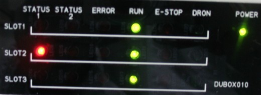
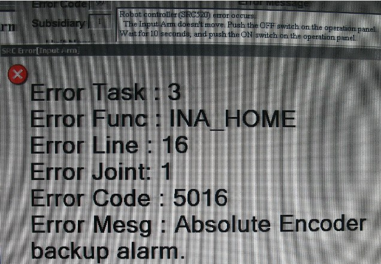
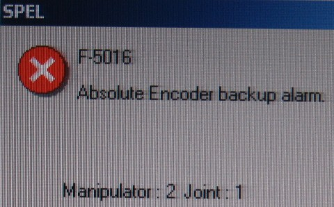

Service History
Subject: Absolute Encoder backup alarm F-5016 for Input Arm
Handler Model: NS-7000
Controller: RC520
Date: 26 May 2012
Symptom
ESP NS-7000 handler, it’s been OFF for almost a month now due to low volume and now when we ON the machine the following errors occurred:
1. An error lights up at slot 1 board at initial start up. (pls refer to pic.1), after index homing was finished it cannot home the arm 1.

2. Picture 2, this is the error message that appears after it failed to home, no obstruction and the arm can be moved smoothly when off.

3. Picture 3, is the error that comes out when I go to Spel for manual checking. 
Action
NS-7000 uses Absolute Servo Motor with a super charged capacitor. This capacitor remembers the encoder data whenever you power down so that you do not need to "mcal" each time you power on like NS6000. So during power on status, capacitor is charged by normal 5V supply.
In the event of power down/offline status, it is charged by the lithium battery. If lithium battery is low voltage, capacitor unable to maintain its charge and data will be loss. In good condition/new lithium battery condition, you'll be able to power down from days to months.
But if you disconnect the motor connector or battery is low voltage, it can only last in term of hours cause it is depending on capacitor ability to maintain charge without battery/5v.
You encountered this error because:
1) Lithium battery low voltage (Drive Unit 2 ; DU2)
2) In this case, servo motor capacitor gets discharged (as you mentioned almost a month)
3) Encoder data lost.
What you can do:
1) Reset encoder by DIP switch.
2) You can refer to calibration chapter of Maintenance Manual for the encoder reset
3) Note the revision of manual wrt your NS7000 version. SEP is old model of NS7000 but reset concept is the same. DU version may be different between old type NS7000 and new type NS7000.
4) If reset encoder does not clear the message, probably, lithium battery is low voltage. Please measure and change if low voltage. New good battery is 3.6V.
5) Please reset encoder again after you change battery.
6) This time, allow few minutes to charge up the capacitor before you proceed to try and run input arm by SPEL.
Ensure Front Operation Panel is Power On so that 5Vdc can charge motor's encoder.
7) You may need to calibrate input arm again as encoder data of y-axis is lost
Cause
Remarks
Lithium Battery ER17500V - R35N700002100